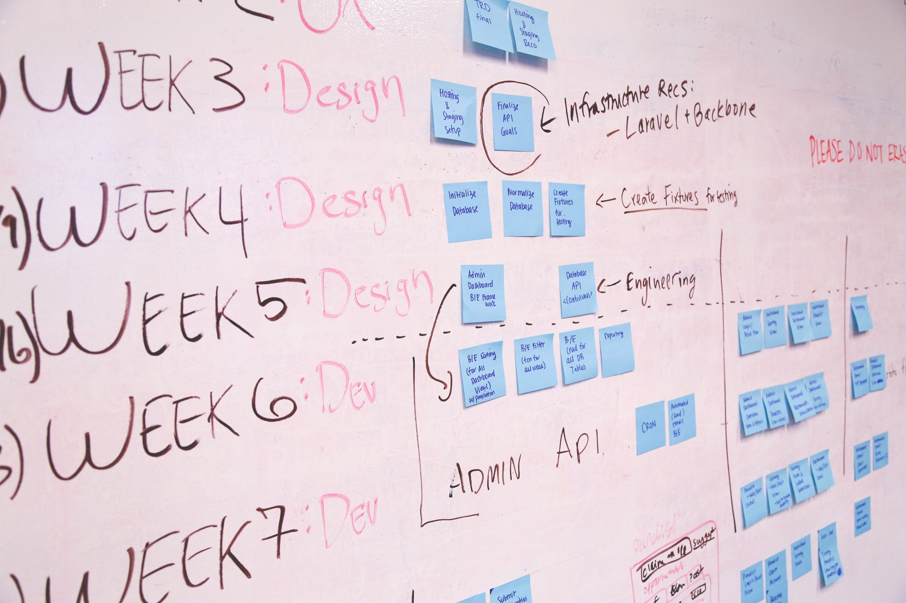

Double Oh Ay Enterprise
Consultancy
From the back office and research lab to the factory floor and across your entire supply chain, we can help you develop an unconstrained, end-to-end program to transform your operations. We’ll ensure that you focus on the opportunities that maximize competitive advantage and strengthen the connection between operations and strategy.
Project Management
 As a project is unique, it typically includes collaborators who do not usually work together. In fact, the collaborators often come from different organizations, disciplines, and even countries. Examples of projects may include the construction of a new bridge or building or developing software for an improved business process. A relief effort for a natural disaster, or setting up a strategy to break into a new sales geographic market are also projects. If you want to complete a project on time, you need to manage it well. You also need to make sure you are within budget. Not only must you work to meet deadlines but you also have to make sure that quality does not suffer. Project management, therefore, is the application of techniques, tools, skills, and knowledge to make sure all project requirements are met. Until the middle of the last century, project management was an informal activity. At DOUBLE OH AY Enterprises when tend to offer the above and lots more.
Training
 Training is teaching, or developing in oneself or others, any skills and knowledge or fitness
that relate to specific useful competencies. Training has specific goals of improving one's
capability, capacity, productivity and performance. It forms the core of apprenticeships and
provides the backbone of content at institutes of technology (also known as technical colleges
or polytechnics). In addition to the basic training required for a trade, occupation or
profession, training may continue beyond initial competence to maintain, upgrade and update
skills throughout working life. People within some professions and occupations may refer to this
sort of training as professional development. Training also refers to the development of
physical fitness related to a specific competence, such as sport, martial arts, military
applications and some other occupations. At DOUBLE OH AY Enterprise we are ready to Train and
Educate you anytime.
Training is teaching, or developing in oneself or others, any skills and knowledge or fitness
that relate to specific useful competencies. Training has specific goals of improving one's
capability, capacity, productivity and performance. It forms the core of apprenticeships and
provides the backbone of content at institutes of technology (also known as technical colleges
or polytechnics). In addition to the basic training required for a trade, occupation or
profession, training may continue beyond initial competence to maintain, upgrade and update
skills throughout working life. People within some professions and occupations may refer to this
sort of training as professional development. Training also refers to the development of
physical fitness related to a specific competence, such as sport, martial arts, military
applications and some other occupations. At DOUBLE OH AY Enterprise we are ready to Train and
Educate you anytime.